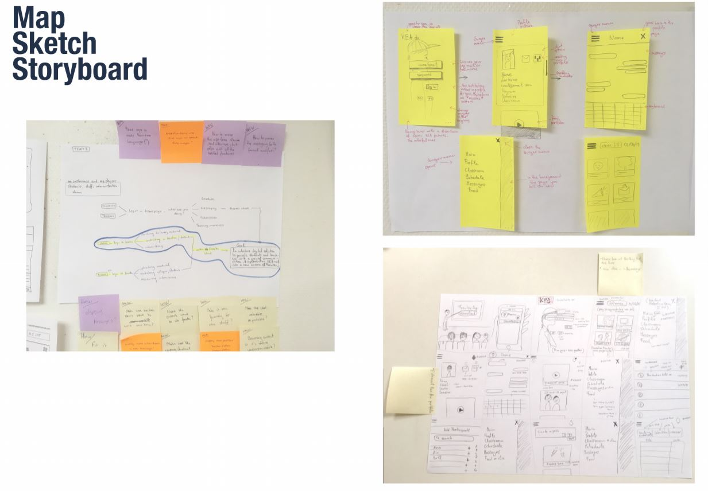

This project was a bit unclear in the begining, the whole group could not decide in one topic. Once we figured it our, we started our prototype process, it did not take us a long time to prototype it as we already knew exactly what to do and how the website should look.
We did the crazy 8's and followed the google team week plan, that was very useful.
